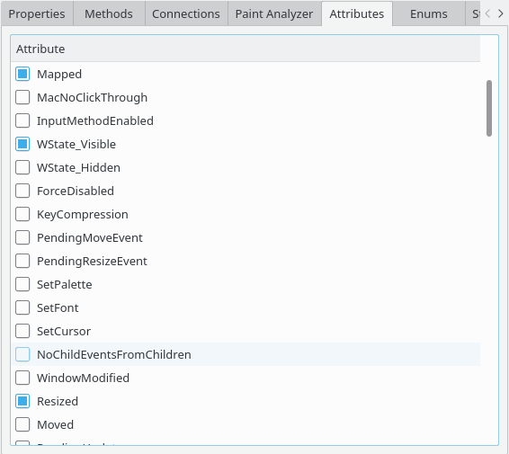

Paint Analyzer Qt3D Geometry Inspector
The widget attribute inspection tab allows you to see and toggle QWidget attributes (see Qt::WidgetAttribute). This is available when selecting a QWidget instance in e.g. the Widget Inspector.
